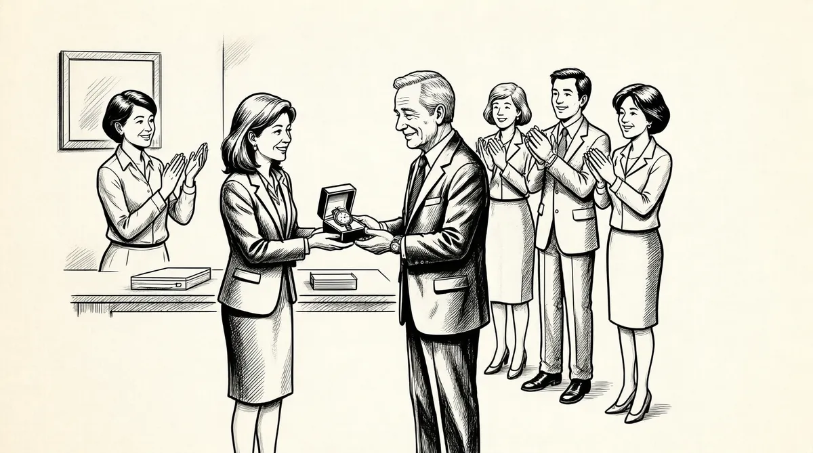

第58章 超越自我

9月，巴菲特情绪高涨。《财富》杂志将他评为商界最有能力的人。在一片惊叹声中，他通过拍卖自己的旧钱包和一条股票信息获得21万美元，用来资助女子公司（GirlsInc.），苏茜的非营利事业。接着，他在eBay网站拍卖自己——或者说是拍卖8个人和他共进午餐的一次机会——用来资助旧金山的格莱德纪念教堂，苏珊的主要事业。格莱德教堂在礼拜期间免费进行HIV测试，为遭遇家人和其他教堂拒绝的男同性恋者举办葬礼和悼念活动。牧师塞西尔·威廉姆斯的口号是“大爱无边”，苏珊把这个词作为自己的口头禅，现在沃伦也不时用这个词。在格莱德教堂，人人都受欢迎：娼妓、吸毒者、酒鬼、流浪者。1这次与巴菲特共度的两小时以及8个人在迈克尔餐厅的一次午餐拍卖，共有50人在eBay网站竞标出价，最终出价高达250100美元——高于他钱包里的股票信息的价值。几天内，艺术家笔下穿着长袍，仿佛来自奥林匹斯山的巴菲特出现在《福布斯》杂志的“最佳着装亿万富翁”栏目。然而，要不是巴菲特的名声和人气可以促进杂志的销售，在如此激烈的竞争中（亿万富翁如今越来越普遍），他是不会被列入什么最佳着装方面的竞争者的。除此之外，还有一件事就是苏茜和苏珊都将应邀参加《财富》杂志的商界女强人峰会，谈论慈善事业，时间就在10月初，参加峰会的人都是美国社会非常重要的女性人物，包括首席执行官、企业家和不同领域的杰出女性。巴菲特为妻子和女儿有这样的机会而无比高兴，特别是他们此次将一起出席如此重要的峰会。
就在那次峰会前的星期五下午，苏珊打电话告诉沃伦她会晚一天到，因为周一要进行一次活组织检查。她在6月去检查了牙周，那次检查本来应该在5月份，当时因为肠梗阻、食管溃疡和贫血而被推迟了。牙科医生发现她的口腔底部有针尖波点状斑点，建议她去看专家。两个月过去了，她还一直没有安排出时间去检查，总是忙于她自己的各类差旅行程。就在最后终于约好医生的时候，还险些取消检查去参加盖茨基金会的活动。
“不，不，不，不，不，不。不能取消。”凯瑟琳·科尔说。科尔一般不会很不客气地反驳自己的朋友和上司，但是这一次她坚持说，“你必须去。”2
德博拉·格林斯潘医生通过触诊发现苏珊脖子一侧的淋巴结肿胀，就强烈建议她在周一尽快去看另一位专家布赖恩·施米特医生，进行一次活组织检查。苏珊似乎并不担心活组织检查会有什么不良结果。她想推迟检查，为的是不错过这次《财富》杂志峰会的任何一个细节。“我必须去。”她这样对凯瑟琳说，就是指必须按时参加这次峰会。然而，那位专家施米特医生拒绝延迟检查。3
巴菲特悄悄地承受着这一切，内心非常震惊。苏珊打完电话后的几小时，他一直和别人在电话上不着边际地聊天，艰难地度过自己从办公室回到家中后的每一分钟。在每天的桥牌时间就要开始之前，他在电话里随便说了一句，但是声音低沉而严肃，“哦，顺便说一句，苏珊星期一要做活组织检查。”
“为什么？！电话那边吃惊地问。”
“她的嘴里有点问题，”他说，“就这样吧，我以后再和你说。”而后他挂断电话。
苏珊作了活组织检查。她照例参加峰会，照例发言，而后飞到东边的迪凯特去豪伊的农场，看望孙子们，开着联合收割机收割庄稼，随后返回旧金山。豪伊事后才明白，自思自忖，唉，她一直说要在收获的季节来农场，但是以前一直没有实现。4然而，那时候他没有发现一点儿异样，因为她还是像往常一样。5
沃伦一直盯着电脑屏幕，要么浏览新闻，要么打桥牌，要么玩直升机游戏。他内心的焦灼还是像平常那样表现出来：不断地问同样的问题，一次又一次地说同样的事情，但是在问及他是否担心时，他还是拒不承认。
星期五，苏珊和凯瑟琳·科尔一道去南加州大学医疗中心取活组织检查结果。苏珊对病情可能会有多么严重似乎浑然不知。他们到了施米特医生的办公室后，苏珊对科尔说：“你怎么那么紧张。为什么那么紧张啊？”科尔心想：“哦，我的天哪，难道她不知道可能会有不好的检查结果吗？”他们见到医生后，医生对苏珊说她患有三期口腔癌。诊断结果让她震惊。“她当时就像遭遇晴天霹雳一般。”科尔说。她显然想都没有想过会有这种可能。6
苏珊一时间眼泪纵横。然而，她还是坚强的她，回到车里的时候，就已经打起精神开始安慰别人。她打电话给沃伦，他没有说什么。她打电话给苏茜，告诉她，“给爸爸打电话，他一定不知所措。”而后她回到家，再次和沃伦讲自己的病情，又和苏茜、豪伊和彼得讲了。7那时候，苏茜已经在浏览相关网站了。8她打电话告诉父亲，“不要去浏览口腔癌的网站”。
每年患口腔癌的有34000人，其中8000多人会因此去世，是一种无痛但可以快速扩散的癌症，比黑素瘤、脑瘤、肝癌、宫颈癌或霍奇金病的致死率都高；9口腔癌的高致命性是因为其通常在扩散到淋巴结后才被发现，到这一程度原发肿瘤就可能侵入周围组织，而且可能转移到其他器官。口腔癌患者极其容易继发第二原发肿瘤，原发治愈后复发的风险高达20倍。
至少90%的口腔癌确诊患者是长期吸烟或使用无烟烟草的人们。既吸烟又喝酒的人患病比例更高。苏珊·巴菲特向来不吸烟、不喝酒。她没有明显的发病因素。三期癌症的检查结果表示癌细胞可能至少已经扩散到一侧淋巴结，但是可能没有扩散到其他部位。
苏珊回到了面朝金门大桥的公寓，三面墙壁上分别摆着旅游纪念品、朋友送的礼物、一件对她而言意义非凡的艺术品。这位素来广交朋友、兴趣广泛的女士开始告诉人们：“我的生活非常美满。孩子们都长大成人，我也有幸抱上孙子了。我热爱生活，而且有自己的工作，真的不需要再多了。”
“如果按照我的意思，”她对科尔说，“我就一个人去意大利的村庄，静静地离开人世。”她更害怕经受痛苦的折磨慢慢离开人间，而不是顺其自然地悄悄离开。但是如果她确实放弃治疗，就是放弃了自己生活中非常重要的人们，几十年来成为她生命一部分的人们。其实就是为了沃伦她才愿意接受手术治疗。然而，她告诉科尔和一位朋友罗恩·帕克斯，说她没有决定是不是要继续手术后的放射治疗，而放射治疗是为降低复发必须进行的，况且该病的复发率非常高。由于某些原因，可能是过分受惊，她似乎没有明白术后放疗有多么重要。10
第二天早晨，苏珊和科尔开始计划接下来的安排，苏珊莫名其妙地拒绝让科尔购买手术后她在公寓里生活所必需的一些设备。科尔需要购买升降椅帮助她在手术后回到位于顶层的公寓。苏珊完全不听这些。科尔认定苏珊一定是因为受惊或者在努力克制自己才表现出这样的情绪，后来她决定打电话给苏茜，苏茜说不用理会母亲的反对，该买什么就去买吧。
其间，备受惊吓的沃伦还是匆匆安排自己的事情，他在情况危急的时候总是这样。他亲自送闷闷不乐的阿斯特丽德到林肯观看内布拉斯加足球比赛。第二天一早他飞到旧金山，就是在那里他得知苏珊需要进行大手术。她再活5年的可能性只有50%。手术可能去除苏珊的大部分颌骨和所有牙齿。手术后一个多月的时间，她只能通过插在鼻子里直接通到胃部的管子进食。而且那段时间她都不能说话，手术还可能引起面部变形。苏珊还和沃伦讲了许多，她说她担心自己的样子会吓坏几个孙子。他们决定下周到纽约纪念斯隆－凯特琳癌症中心再进行一次检查，尽管这很大程度上只是重复一次检查而已。
回到奥马哈，沃伦就一刻不停地打电话、在线玩儿桥牌、工作、处理即将到来的一次会议——和《华尔街日报》发行人卡伦·埃利奥特·豪斯的会议。到目前为止，巴菲特与《华尔街日报》发生过几次分歧，原因就是该报对他的报道，其从1992年开始，就将他称为戴着友好贤明“面具”的“顽固而优雅之人”。豪斯此次造访可能是为了当面请罪、以示愧疚，也可能是想探探他有没有意向并购当时陷入财务困境的报社。但是他的注意力从来没有真正离开过苏珊，他谈到她的时候滔滔不绝。接下来的几个月，他决定每个周末都到旧金山陪她。尽管他确实不知道自己该怎么做，但是他希望自己可以按照一种自己理解的方式来关心她，就像如果他病了，她会怎么关心他那样。他说他清楚地感觉到她需要他陪着。确切地说，他也需要她在身边。
和豪斯的那次会议太平无事；双方都没有感到为难，巴菲特也没有并购报社。那一周他每天早晨都一脸倦容——显然是没有休息好——然而，他还是打起精神处理每天的工作。除了秘书戴比·博赞科和少数几人以外，伯克希尔–哈撒韦总部没有人知道原因。
那一周他几乎没有离开自己的座位，办公室就在复印室和两个档案室之间，大部分时间他都通过电话和苏珊聊天。尽管他们一聊就是几小时，但是她从不明确提到自己要面临的折磨。开始，她自己还没有完全明白究竟是多大的手术，可能还需要从她的腿上取一块骨头进行移植。外科医生也不确定手术会对她的面部造成多大的影响，尽管他们认为可以保住她的舌头。对她来讲最要命的就是她从此也许再也不能唱歌了。她和前女婿艾伦·格林伯格谈到过手术，艾伦对她的健康状况比较了解，多年来他曾经带这位朋友、上司和前岳母多次进出急诊室。而且格林伯格注意到巴菲特面对疾病时表现出的退缩无助的情绪，所以在去巴菲特的办公室汇报基金会项目工作的时候，从来不提苏珊。
然而，尽管沃伦不想知道太多，他说着说着还是说了他所知道的情况。“有5个医生参与手术，手术时间至少需要10个小时。她可以得到全世界最好的护理。她收到了豪伊的来信——没有哪位母亲收到过孩子写来的那么感人的信。她具备许多有利条件，但是手术还是非常折磨人的。医生们告诉她许多许多，她知道我不想了解细节，就告诉我她认为我能面对的事情。我可以肯定医生们一定认为我疯了，因为我没有直接和他们谈。但是我做不到，所以是她告诉我手术的这些关键问题的。”
几天后，苏珊飞到奥马哈去接苏茜，按照她的第二套计划，苏茜将陪她到纽约纪念斯隆－凯特琳癌症中心。在癌症中心的检查带来一些好消息，那就是没有癌细胞扩散的迹象，她们又回到奥马哈，苏珊在那儿度过周末。但是，在奥马哈她又发作了因腹腔粘连引起的剧痛。距离上次肠梗阻剧痛发作还不到5个月的时间，就是去年5月他们全家因此取消非洲之行的那一次，这样的发作非常痛苦。她晚上只好住在苏茜家里，第一次吞下大量的止痛片而没有去医院，而此前每一次发作她都必须去医院。
巴菲特形容枯槁，拖着疲惫的身躯坚持去办公室，星期三参加了可口可乐在亚特兰大召开的董事会议。他回来后，苏珊开始从剧痛中恢复，去看了阿斯特丽德。阿斯特丽德见到苏珊后，不能自已地哭了起来，这一次又是苏珊来安慰别人。
周末结束后，苏珊飞回旧金山，巴菲特又开始情绪低落，他说话时声音嘶哑，显然睡眠不好。两年一度的巴菲特集团会议再过几天就要召开了，这对他也是一种压力。苏珊的医生不希望她参加集团会议，因为要去圣迭戈。因此，1969年以来沃伦第一次独自参加会议。不但苏珊没能出席，他的朋友、早期的合作伙伴、洛斯保险公司总裁拉里·蒂施这次也缺席了，他同样也是因为生病了，而且是晚期胃癌。
巴菲特显然一直在想这次苏珊不能一道参加会议将是什么情景。她生病的消息一定会引起轰动，很多参加会议的人之前就有所耳闻。5天中他将一直回答关于她的各种问题，接受络绎不绝的问候，还要努力克制自己的情绪。他必须亲自主持会议，保持会议气氛，但也不能过分兴奋而让人觉得做作。巴菲特很好地把握了自我调整的艺术，仿佛这是他与生俱来的本领——然而，现在他还是需要刻意调整自己的情绪。会议结束回到酒店后，他孤独地在黑暗中思索幻想。
“我的幻想很多，”动身到圣迭戈的前一天他这样说，幻想有时候也让人不安，“在那里我扮演多个角色，没有一刻闲着。”那天晚上他晚餐就要了一个三明治，在办公室一边吃一边和一位客人聊天，在沙伦来打桥牌之前他一刻也不愿闲着，一直都在聊天。开始他只是谈一些无关紧要的政治和经济方面的话题，后来，谈话还是转到了这些天来一直让他揪心的事情：手术在这次会议之后很快进行。
瞬间，他的脸上闪过一丝异样，表情开始扭曲，后来双手掩面，双肩不停地抖动，整个身体一下子向前瘫在椅子上，仿佛地震中倒下的高塔。他无助地抽泣着，几乎喘不过气来。此时没有什么可以安慰他。
渐渐地，他克制住无比的悲伤，开始讲他的苏珊。在长达两小时的时间里，他依然不时地痛哭流涕。他为她必须经历的巨大痛苦而担心，她比他坚强。他更担心的是她会把死亡当作一件很自然的事情来接受，而不像他一样去和死神抗争。他害怕失去她。他一直认为自己的中心是她，而现在却要反过来了。他一直认为自己不会孤单，因为她会比他长寿。他一直认为自己可以凭借她的智慧和判断来面对人生必须面对的生死抉择。他一直认为在他离开后，她会打理好基金会。没有他，她一样可以保持家庭和睦；她会保证阿斯特丽德得到很好的照顾；她会解决任何矛盾，缓解别人的痛苦。她会打理好他的葬礼，以一种独特的方式让人们永远铭记他。最重要的是，他一直希望在自己生命的最后时刻苏珊可以陪在他身边，在死神降临的时候，她坐在床头，握着他的手，告诉他不要害怕，帮助他减轻痛苦，就像她一直安慰别人那样。多年来这是第一次，他必须考虑事情可能完全不是自己一直设想的那样。但是这些想法太残酷了，他只能强迫自己立即停止思考。他相信医生们会照顾好她，她可以活下来。离开办公室去打桥牌的时候，他还是非常忧郁，但是平静了许多，也镇定了许多。
第二天一早，巴菲特飞到圣迭戈。在巴菲特集团的会议上，他略显沉默，但没有垂头丧气。他主持了三天的会议，包括在盖茨家的一次晚餐聚会，比尔·鲁安发言讲了改善哈勒姆学校的条件一事，杰克·拜恩讲了管理接任的问题，查理·芒格讲了伟大的实业家安德鲁·卡内基的生活，安德鲁·卡内基主张死而富有是一种耻辱。豪伊·巴菲特只是碰巧参加了聚会，他讲述了自己的摄影画册《人生织锦画》中的照片背后的拍摄动机，画册展示了生活在贫困的非洲深受苦难的人们；杰弗里·考恩，南加州大学安纳堡传播学院的院长，发表了题为“从年轻的理想主义到年迈的官僚主义”的演讲，内容涉及美国社会称为“静默的一代”的人们，他们生于20世纪30年代末到40年代初，而且在座的各位大多都是那个年代出生的。11
沃伦在圣迭戈的时候，阿斯特丽德在图森的峡谷大农场水疗中心，是沃伦送她去那里的，因为苏珊的健康状况让她非常不安，他希望她能到那里放松一下。她之前从来没有到过水疗中心，起初坚决反对。在奢华的庄园里尽情享乐，对她来讲就像一个从来没有修过脚的女士想尝试勾手三周跳一般。阿斯特丽德没有什么豪华的装束，她只带了几件T恤衫到那个知名的度假村准备度过一周的时间。到那里后的第一顿午餐只要了一个火鸡金巴利汁卷，出于习惯，她开始不厌其烦地向工作人员讲述废物回收利用和泡沫包装方面的环保观念。在接待区，一位护理人员带她来到了一间办公室，为她特别制订水疗和保健养生方案。在问及她当时的感受和有什么担忧的时候，她居然回答说她担心她的朋友苏珊。护理员显然明白自己眼前的这位女士向来都是关心别人、照顾别人的类型。她温和地对阿斯特丽德进行了一些放松治疗，如接触疗法。阿斯特丽德参加了几次瑜伽课程、练习走鸟步、学习烹饪、做美容、按摩、学打高尔夫。她不习惯自己得到别人的照顾，但是令她感叹的是，自己可以一点点习惯别人的照顾，而且居然发现这样也蛮不错的。
苏珊手术的前一天，巴菲特从圣迭戈结束会议飞到旧金山。他本来安排那天一定要去参加一个奈特捷的市场活动，但是苏茜知道他是在克制自己对苏珊的担心，就打电话对他说必须到旧金山。因此，他勉强来到了旧金山，晚上就和家人一起在苏珊的公寓度过。大家都像平常一样。苏珊这一次不需要照顾别人（因为她自己需要照顾），她就一直回避和家人谈起自己对第二天将进行的手术有什么想法，始终都在一边打电话。沃伦一晚上都在电脑上玩直升机游戏，眼睛都没有离开过屏幕。
第二天一早，全家就陪着苏珊来到加州大学旧金山医疗中心，在那里，专家们给她进行了静脉注射，在她的左腿膝部到脚踝处用魔幻变色笔画了一个巨大的椭圆。他们说这是为了标明从哪里切开她的腿，取出进行移植所需的骨头。艾斯利医生，苏珊的外科医生，告诉他们他会在手术开始后90分钟左右离开手术室，来告知他们癌细胞是否已经扩散。
而后，苏珊带着女儿来到卫生间，把门关上。她不想让沃伦听到她必须说的一些话。“听着，”她说，“爸爸现在一定吓坏了。你要明白如果手术发现癌细胞数量很多，就别让他们进行手术了。我很担心他会在得知癌细胞确实扩散的情况下，依然告诉医生们继续手术，他不希望我离开。”
8点钟，苏珊开始手术，家人都来到手术等候室，在那里等候手术消息。许多人都在那里盯着电视里播放的杰里·斯宾格的节目打发时间，此时他们关心的人在手术室里接受手术治疗。沃伦手里拿着一份报纸，不时合上报纸，挡在脸上，抬起一只手揩去眼泪，而后又打开报纸。
艾斯利医生在45分钟后就从手术室出来。尽管在两侧淋巴结都发现了癌细胞，但是没有扩散到其他部位，还算是好消息。手术只需要摘掉口底、两颊内侧和大约1/3的舌部，不需要植骨。艾斯利医生离开后，沃伦开始问：“哦，苏茜，他刚才是说要过一个半小时，他还要来告诉我们吗？你可以肯定吗？他们真的知道吗？”每一次，苏茜都耐心地和他说他们已经知道结果了，然后，过几分钟，他就又开始问同样的问题。“哦，他们怎么这么快就知道了？”他不停地说，“我觉得不对，可能他一会儿还要出来。”
16个小时后，苏珊进了重症监护病房，通过气管套管呼吸，左臂从手腕到肘部都缠着绷带，医生从那里取了一块皮在她嘴里进行了皮肤移植。她的舌头都肿得从嘴里伸出来了，鼻孔插着直接通到胃里的鼻饲管。她不停地咳嗽，气管套管总被堵塞，必须不时地进行清理，保证她可以正常呼吸。12
第二天早晨，在医院里，苏茜对父亲说，“您必须作好心理准备，看到妈妈您会非常震惊。”沃伦硬着头皮走进苏珊的病房。他知道不能让她看出自己脸上惊异的表情，那样会让苏珊察觉到自己看起来有多么吓人。他努力让自己坚强起来，无所畏惧地在她身边坐了一小会儿。之后，苏茜告诉父亲和两个弟弟先回家去，他们待在医院也没有什么事情可做。坐在苏珊身边的时候，他把自己的感情都藏在了潘多拉盒子里面，离开后他说自己“一直哭了两天”。
接下来的两个周末他都在旧金山和苏珊度过。后来，就在苏珊准备出院回家的时候，他飞到佐治亚州，为佐治亚理工学院的大学生作了一次演讲。他没有更多地谈到创业经营，而是讲了一些常见的主题。他给学生们讲了精灵的寓言，还讲到了慈善事业。他说一个人一生中最好的投资就是投资自己。他讲了他的偶像本杰明·格雷厄姆，还说选择自己的偶像一定要慎重，偶像是影响我们一生的人物。他告诉大家要为自己崇拜的人工作。
学生们问到他最大的成功和失败的时候，这一次他没有讲事业方面的疏忽和错误，而是说：
其实，当你们到了我这个年纪的时候，你们衡量自己成功的标准就是有多少人在真正关心你，你也希望得到他们的关心。
我认识一些非常有钱的人，他们举办庆功宴会，修建以他们的名字命名的医院辅楼，但事实上世界上根本没有人关心他们。如果你们到了我现在的年纪，却发现没有人对自己有好感，不管你的银行账户上有多大数目的存款，你的生活依然是不幸的。
这是对生活的极限测验。关爱是用钱买不来的。钱可以买来性、可以买来庆功宴会、可以买来宣传自己活得精彩的小册子。得到关爱的唯一方法就是做一个讨人喜欢的人。如果你有钱，你可能对此非常愤怒，你可能会想自己可以写一张支票：我要买价值百万美元的关爱，但是关爱是买不来的。你付出的爱越多，得到的爱才会越多。13
苏珊回到面朝旧金山湾区阳光充足的公寓后，沃伦每个周末都来看望她。因为担心灰尘堵塞气管套管，房间里原本铺着的鹅黄色的地毯已经不用了。她通过升降椅回到公寓，护士们也启用了租来的气管抽吸系统。医生们开始为苏珊准备为期6周的放射治疗，放疗是为了杀死残存的癌细胞。她一直没有完全同意接受放射治疗，而且放疗可能灼伤她的咽喉。手术前医生们就告诉她吃胖一些，因为手术和放疗期间她的体重估计要减少50磅。50磅不是一个小数目，但是手术前让她欣慰的就是当时自己的体重情况完全需要好好减肥。现在，鼻饲管不用后，护士们一天喂她6次流食，因为疼痛难忍，她需要大半天才能吃完。
压力之下，沃伦的体重增加不少。他觉得自己得减掉20磅，就决定和苏珊一起选择流食养生。“那不是什么有趣的事情，”他说，“所以我也没有得到一点乐趣。”
巴菲特的节食方式和他的饮食习惯一样偏执古怪，而且不利于健康。他决定坚持自己的一贯策略，那就是每天只摄入1000卡路里的食物，想吃什么就吃什么。就是说他可以吃甘草什锦糖、花生糖、汉堡或者其他任何他想吃的东西，只要不超过他自己限定的1000卡路里。最轻松的一步便是不喝樱桃可乐，也不喝别的什么取代樱桃可乐，就是直接减少水分摄入。每天1000卡路里的节食养生之道的理念就是，结束节食带来的痛苦。他没有耐心，不理会这样的节食方案有什么健康问题。“就我的身高和年龄，”他说，“我觉得自己可以一年摄入100万卡路里，照样保持这个体重。我可以随心所欲地消耗那些卡路里。如果我想在1月份吃大量的热软糖圣代，接着这一年就饿着，我也能做到。”
这真是个表面看来完全合理却彻底荒唐的方案。但是，他一直以来既没有体重严重超标也没有什么重大疾病，所以没有必要就此和他争执。（每年股东大会之前他都采取这种节食速成方案；然而，一直脱水节食的做法与前几年的肾结石可能确实没有什么关系。）无论如何，巴菲特都在出现问题之前，振振有词地坚持自己的理论。然而，一个罕见的例外就是他在面对媒体评价的时候。他从来没有与《金融时报》或《纽约时报》有过什么争端，他是这两份报纸的忠实读者。他的麻烦一直是《华尔街日报》。
多年来，他总是让一些乡巴佬了解一个事实：华尔街向来都是一帮好敲诈的人出没的一个非正式场所，因此与《华尔街日报》有所积怨，《华尔街日报》是华尔街带有危险性的正式报纸。他曾经出于友善地组织过一次《华尔街日报》的“编辑部”午餐会，结果适得其反。在编辑部的会议中巴菲特站在台上，向编辑们讲述当今的一些经济问题——他喜欢这样做——但是，这一次报纸居然引用了不得公开的内容。凯瑟琳·格雷厄姆违背了自己的新闻业准则——格雷厄姆的座右铭是不公开的内容就是通过引用也不得刊登——除非确实可以产生正面效应。14巴菲特勃然大怒，而且报纸还找借口推卸责任，表示不会因此向他道歉。此外，《华尔街日报》的社论版定期对他进行恶语攻击，因为他主张减轻穷人和中产阶级的税负，增加富人的税负。
然而，他却不能想象一天不读《华尔街日报》的日子，即便在每个星期五，他要开车到奥马哈艾普里机场坐上三个小时的奈特捷航班到旧金山去也不能例外。通常是沙伦·奥斯伯格到机场接他，直接带他来到位于太平洋高地的苏珊的公寓。他不想打搅她的休息，也担心光线穿过苏珊房间没有窗帘的大窗户会弄醒她，所以那段时间他就睡在楼下用来存放东西的房间。苏珊打盹儿或睡觉的时候，他经常去沙伦家看电视里的橄榄球赛，有时候靠在沙伦肩上痛哭，有时候他们去看午夜电影。
沃伦在旧金山的时候，苏珊不见其他客人，只有女儿、护士们和每天照顾她的科尔等人陪在身边。她几乎不见什么人，即使住在同一座公寓的珍妮·利普西·罗森布拉姆和沃伦的妹妹伯蒂也不例外——而且不仅是周末——即使分散一点儿精力都会让苏珊筋疲力尽。珍妮每天写一张卡片，放在苏珊公寓的门口。和许多苏珊一直以来关爱的人一样，伯蒂因为不能见到嫂子而难过。她一直仰慕苏珊为人处世的智慧，最近她的丈夫刚刚过世，她觉得自己也获得了一种同样的智慧。“希尔特是心理学家，”她说，“想都不用想，他就能知道人们大脑中的元信息是什么。希尔特去世后，他指引我以一种从未有过的方式处理事情。突然间，我明白了过去自己一直不明白的事情。”伯蒂认为她现在和苏珊的关系也不同了，是一种平等的关系了，所以她不会再凡事都依赖苏珊。她还认为自己终于开始理解苏珊了。
沃伦每周都要往返于奥马哈和旧金山之间，他也学到了许多自己从来都不了解的东西——药物治疗、放射治疗、医生和护士所讲的每一个细节以及医院的设备。同样，他的情感也进入到一个新的阶段——可以正视自己和苏珊对疾病的恐惧。在谈到最近发生的一系列事情时，他很有分寸地讲了讲妻子的情况，不让自己的情感外露，和不同的人以不同的方式谈及目前的情况。有时候他会和自己全力支持的阿诺德·施瓦辛格讲一下妻子的情况，阿诺德·施瓦辛格是他最近认识的一位性情相投的朋友，他被提名为共和党候选人，参加加州州长格雷·戴维斯被免职后的罢免竞选。“我妻子6周前在旧金山做了一次手术，我每周都到那里陪她。（停顿）嗯，人们都知道，阿诺德，有时候我们不能辨别谁是谁，什么时候互相依偎，什么时候分离，没有人知道。”
熟人打电话的时候，他开始刻意去谈之前自己总是拼命回避的问题。
哦，嗨，查克，嗯，她恢复得很好，比预期的情况要好许多。她没有一点精神头——她以前从来没有这样。但是相比之下，她的嘴恢复得很好，肿胀也好多了——一切都还可以。人们都吓坏了，现在她不那么疼了。我觉得可能更多的是心理作用——我是说她现在依然没有失去对生活的信心。
年会啊？哦，我正要说呢，现在苏珊的情况，我觉得需要跳过音乐节目——今年5月的年会上她是不能唱了，所以我们期待明年吧。
他还是会时不时地提到苏珊可以再唱歌，尽管事实上苏珊再也没能唱歌。只有在和非常亲近的人，比如和女儿在一起时，他才会偶尔表现出无助的样子。
喂？嗨。我很好。我每晚就睡两小时。嗯，很好。怎么不到这儿来呢，我们换着开车出去玩吧？嗯，好，路上会碰到三流演员搭车的，当然是偶尔。就来这儿……我们一起。明天或什么时间都行。好。可以吧？好。
每晚睡两小时。
我想事情的时候就睡不着。昨晚我就只睡了两小时，我感觉挺好的。不睡觉都没有问题。苏珊又开始犹豫要不要接受放疗。
我们说服她了。我离开旧金山的时候她完全不想接受放疗，但是我又回到那儿后，她就表示可以接受……
苏珊做手术唯一的好处就是30多年来我将第一次不去翡翠湾过圣诞节。我甚至会想我的房子还在不在那儿。